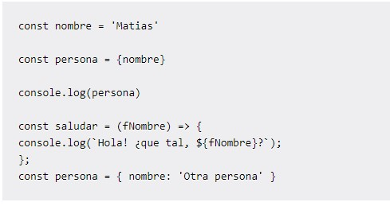
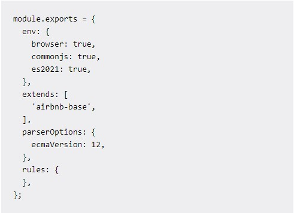
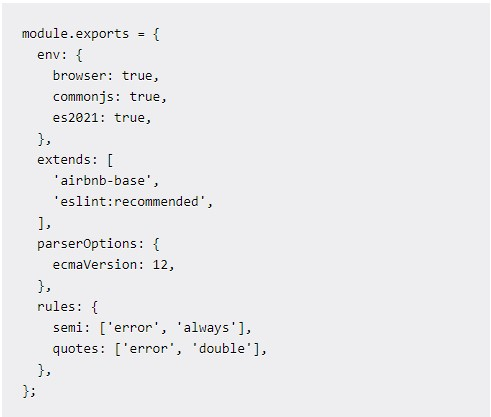

Ejemplo de su uso y como instalarlo en nuestras computadoras
-->¿Como empezar?<--
La manera más simple es tener ya un proyecto JavaScript en el cual utilizaremos ESLint. Empezaremos creando un directorio en el cual almacenaremos el proyecto, y esto lo haremos directamente de la terminal, escribiendo este comando: mkdir linting
Ahora debemos de ingresar a nuestro directorio para comenzar a trabajar, escribiendo nuevamente un comando muy simple: cd linting, dentro del cual crearemos nuestro archivo JS, siendo este muy simple, y por el cual deberemos de digitar la siguiente linea: touch app.js
Dentro de nuestro proyecto, procederemos a agregar un poco de código, abriéndolo en nuestro editor de código de preferencia:
A simple vista, se denotan muchos errores de formato en este código, además de un problema de sintaxis.
Ahora iniciaremos el proyecto usando esta línea en la consola de comandos: npm init, el cual creará el archivo package.json, en el cual se describe la configuración del proyecto y la lista de dependencias del mismo.
Ahora procederemos a configurar ESLint, usando la consola de comando escribiendo: npm install eslint --save-dev.
Una vez se encuentre instalado, iniciaremos la configuración ejecutando npx eslint --init.
Los pasos son muy sencillos a partir de aquí, solo debemos de seguir las instrucciones que se nos muestran, hasta llegar al último, el que nos dice "¿Quieres instalar las dependencias ahora con npm?" Selecciona Yes. Al terminar este proceso podrás notar que un nuevo archivo fue creado en el directorio raíz del proyecto .eslintrc.json (o . js o .yaml dependiendo de lo seleccionado).
Finalmente agreguemos algunas reglas simples en el archivo de configuración. Abre el archivo .eslintrc.js (Si elegiste el formato JavaScript) y verás lo siguiente:
Ahora, agreguemos una nueva guía al arreglo extends y algunas reglas al objeto rules
Aquí agregamos eslint:recommended al arreglo extends indicando que también usaremos las reglas recomendadas de ESLint. Además, agregamos dos nuevas reglas en el objeto rules indicando que utilizar punto y coma semi al final de cada línea de código es requerido y que se usaran comillas dobles en los strings.